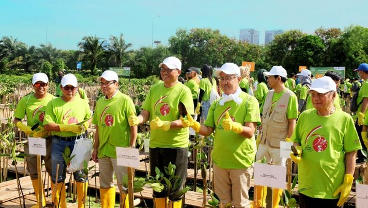

ABOUT US
Seluruh Panitia FOR NATURE mengucapkan Banyak- banyak terima kasih atas bergabungnya saudara-saudara yang mendukung FOR NATURE. Program Saving Our Planet adalah program yang bertujuan untuk membujuk seluruh penduduk dunia agar lebih peduli terhadap lingkungan di sekeliling kita. Mengapa kita harus peduli dengan lingkungan kita? Karena saat ini, seiring dengan kemajuan teknologi, manusia tidak peduli lagi dengan lingkungan sekitar. Polusi, limbah, gas emisi memberikan dampak yang merusak. Dan dampak tersebut menyebabkan masalah baru, yaitu Pemanasan Global. Fakta penelitian. Dalam 100 tahun terakhir ini, suhu planet kita telah meningkat setiap satu tahun. Permukaan air laut telah meningkat sekitar satu meter. Perbandingan zaman sekarang dengan zaman dulu. Zaman sekarang bumi benar-benar dieksploitasi. Eksploitasi tersebut menyebabkan masalah-masalah besar. Sebagai contoh, illegal logging yang menyebabkan kawasan hutan semakin berkurang. Illegal logging juga menyebabkan flora dan fauna punah karena kehilangan habitatnya. Belum lagi eksploitasi pertambangan yang tidak dapat didaur ulang. Penanggulangan. Dengan masalah-masalah tersebut kita membutuhkan langkah proaktif untuk memelihara alam. Kita, sebagai generasi muda harus mencurahkan usaha kita agar kita mendapatkan tempat yang lebih baik untuk hidup. Tidak hanya kita, tapi juga bagi generasi selanjutnya. Saya menyarankan agar setiap orang menanam setidaknya satu tanaman. Walaupun hanya tanaman, tetapi manfaatnya amat sangat besar bagi kita umat manusia.
Dan kami memliki slogan yaitu " Go Green! Reduce, Reuse, Recycle! This is Your Plane, Go Green! If You Dont Go Green, You'll Die!
GO GREEN FOR NATURE
